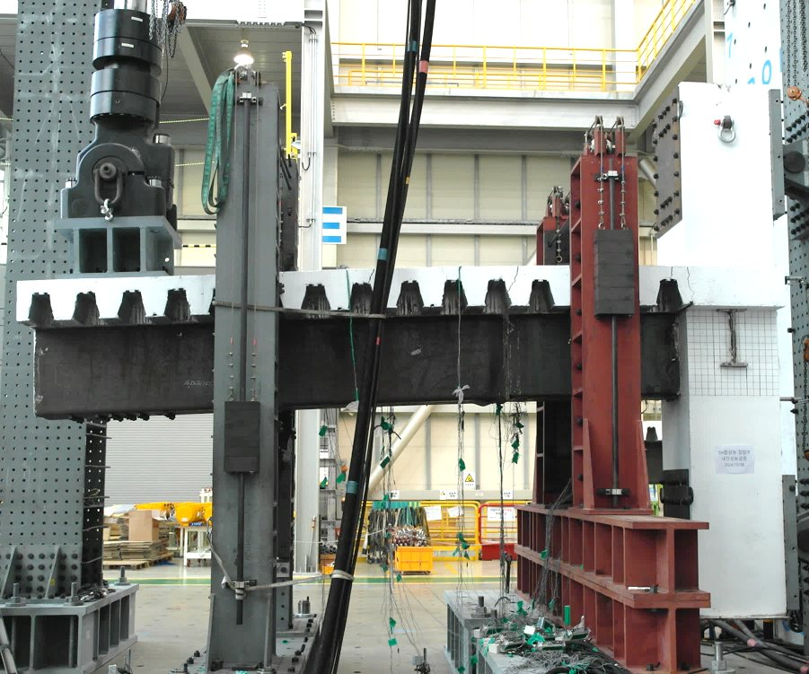

Steel & Composite
강·합성구조Steel & Composite Structures
건축물의 고층화·장스팬화와 공기 단축 요구에 따라, 강재와 콘크리트의 장점을 결합한 합성구조의 적용이 확대되고 있습니다. 새로운 강·합성 부재와 접합부의 거동을 실험과 해석으로 규명하고, 이를 설계식으로 정립하여 신기술이 현장에 적용될 수 있는 기반을 마련합니다.As buildings grow taller and longer-spanning under tighter construction schedules, composite systems combining steel and concrete are increasingly adopted. We characterize the behavior of new steel and composite members and connections through testing and analysis, and establish design equations that bring these technologies into practice.
- 하이브리드 합성보Hybrid composite beams
- 슬림플로어Slim-floor
- 딥데크·트러스거더Deep deck & truss girders
- 탑다운 공법Top-down construction
대표 성과Key outputs
- J. Building Eng. 2026 · top-down composite beam–column system
- Int. J. Steel Structures 2024 · truss-girder composite slabs
- J. Constr. Steel Res. 2018 · HSS hybrid composite beams
